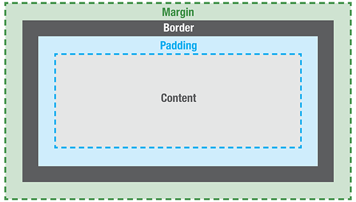

I've decided to create a chart that shows the difference between margin, border, and padding, since I think it makes it more clear.
Margin: A margin is applied outside of your element and affects how far your element is away from other elements
Padding: This is applied to the inside of your element.
Border: A border shows the edge of an element.